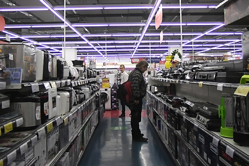

Россияне назвали самую бесполезную бытовую технику. Об этом свидетельствуют результаты опроса портала Hi-Tech Mail.ru, передает ТАСС.
Почти каждый пятый респондент посчитал, что самая ненужная в доме вещь — мультиварка. Также россияне неохотно используют робот-пылесос, хлебопечку, парогенератор и электрический обогреватель.
При этом для трети россиян робот-пылесос стал самой желаемой бытовой техникой. Более 20 процентов опрошенных хотели бы иметь посудомоечную машину, кофеварку и увлажнитель воздуха. Машину для сушки одежды назвали самым желаемым прибором 14 процентов респондентов.
В домах большинства россиян можно встретить стиральные машины, пылесосы и утюги. Более чем у 50 процентов опрошенных куплены микроволновая печь, блендер, мясорубка, электрический обогреватель и мультиварка.
В августе аналитики сервиса объявлений «Юла» вычислили самые быстропродаваемые товары. По их данным, быстрее всего продаются объявления из категории «Бытовая техника» — они находят своего покупателя меньше чем за сутки.